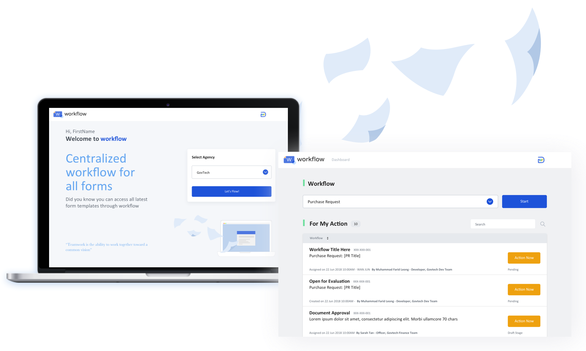
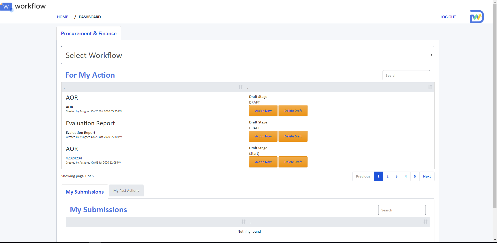
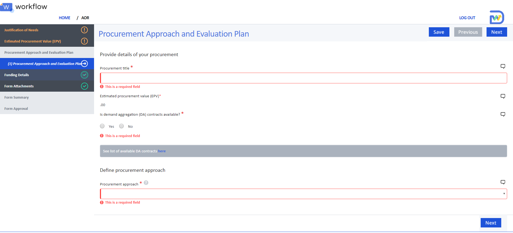
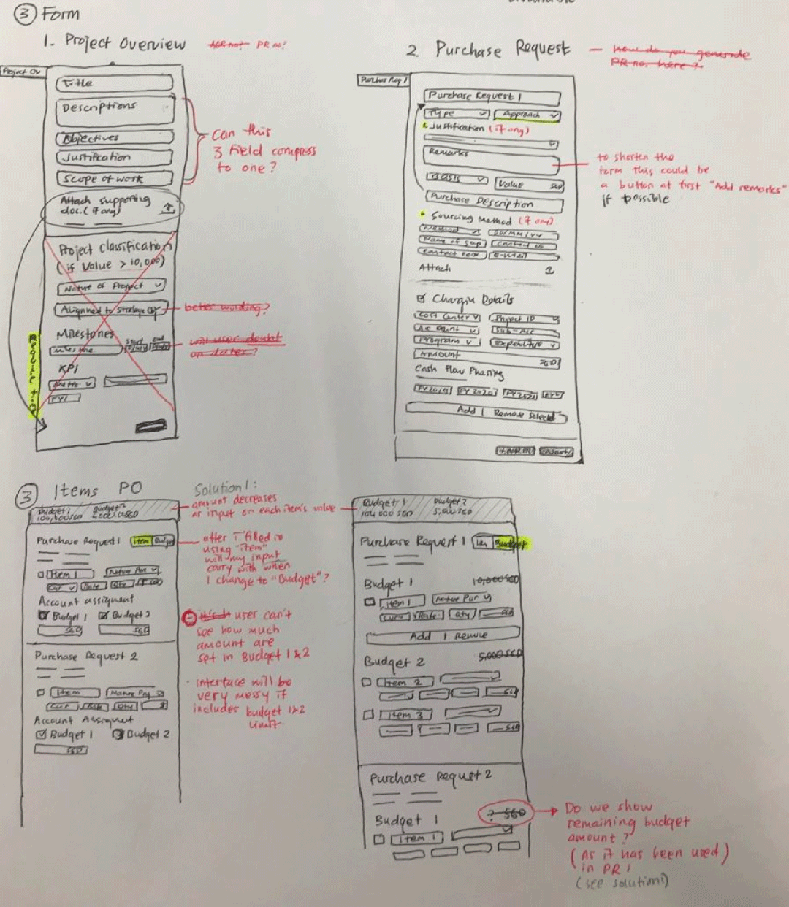
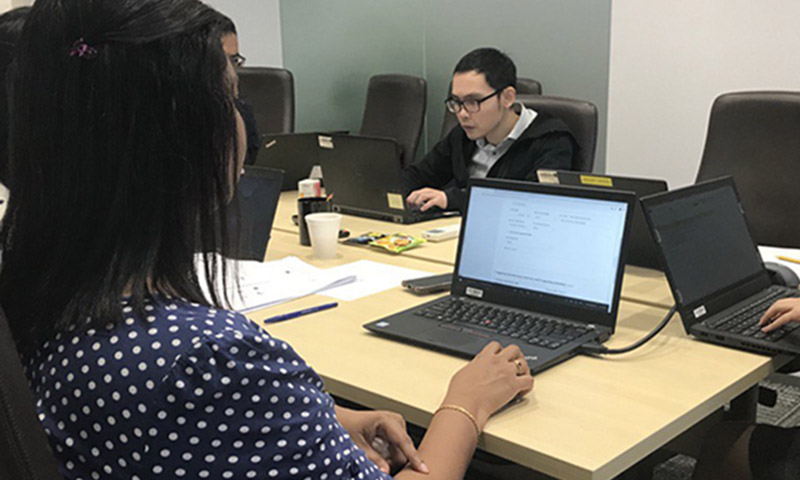
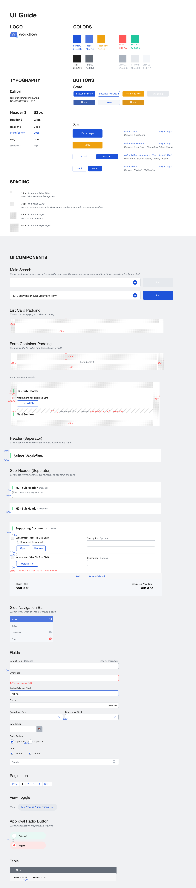
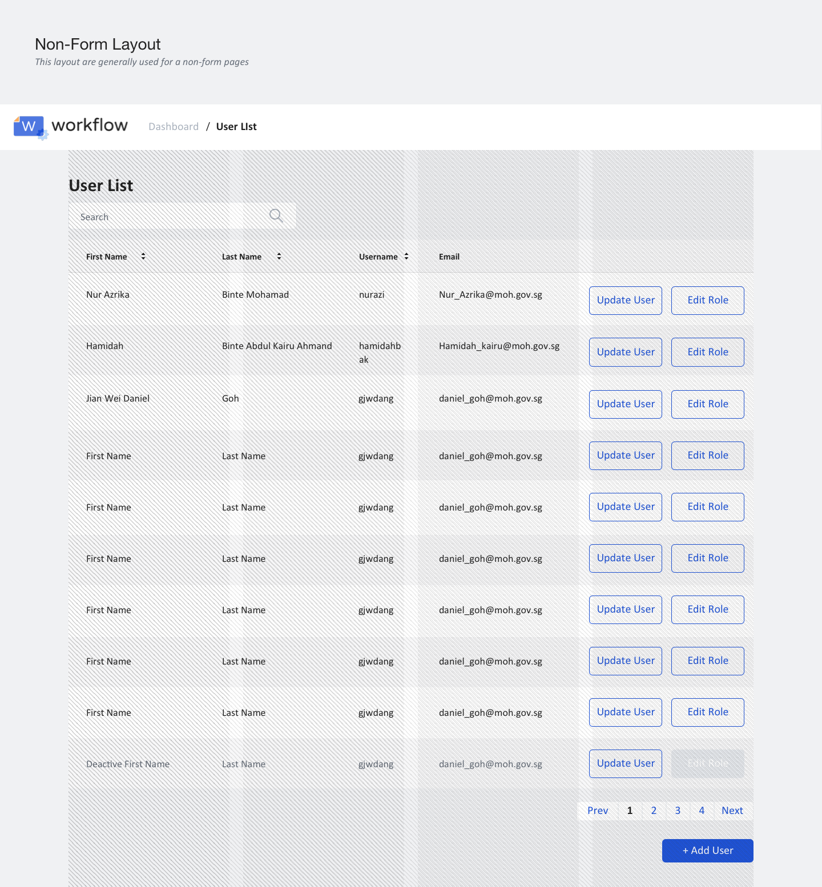

A centralised procurement process workflow across whole government agencies.
Background
The client wanted to bring in user-centric design thinking onto their product after they had build a working prototype. The product is an approval workflow & series of forms on procurement process. Using a form-builder platform to develop, which has many constrains on the interface & functionality. My role here was to access their form experiences, structure, and standardise UI component & terminology to maximise "user-friendliness" in the midst of technical constraint condition.
Goal
Asure the usability & user-friendliness of the form.
Reduce time needed to fill out online form.
Approach
1. Understanding Users & Roles
There are 2 main roles:
1. Requester - I need to make some purchases for my project.
2. Approver - I need to assess the budget with certain conditions to approve the purchase request.
2. Understanding Functionality & Procedures
From the product that has been built, understanding the context and the intent of the product by playing around with the screen and asking questions for validation to the Product Owner.
 Before redesigning
3. Evaluation & Suggestion
From information collected about the users, we emphatize and renact how user is filling the form, together with common design principles we evaluate the screen's interaction and came up with some key points of improvement to make:
- Compression of fields (remove as many fields possible)
- Autofill
- Contrast in highlighting mandatory fields to avoid encounter error
- Clear instructions
- Clear structure, grouping, and flow. To let user know where they are at.
- Structure the form, from easy to hard

3. Sponsor User Interview
To validate what have we evaluate & suggest works for the users.
- On reducing number of fields seek a view and discussion with the related roles to make sure we only provide fields that is required to make their decision. So we start from the Approver point of view to determine fields that we can remove.
- Discussion with Product Owner before we proceed to redesigning screens, we seek Product Owner's view and approval by presenting our findings and planned improvements.
4. Redesigning Screens
Improvements made:
- Number of fields reduced by 20%
- Introduce hierarchical layout for there are multiple sub-sections
- Introduce a calculation of total cost to keep track of different items' purchases
5. Usability Testing
To validate our newly designed screens, we conducted usability testing with our users. Results there are areas of improvements that we need to make, but most of them are caused by platform limitation.
6. Style Guide
Standardising and overseeing CSS development, worked closely with developers.
 
6. Conclusion
I was juggling in between projects when doing this, the part when have to remember few different processes and where we left off at a time sometime can be challenging, what I learned is that I need to store documentations of what I've done more organized.
Overall, the client was happy with the screens and interactions improvement and we have onboarded some government agencies to use our system and we are in taget to centralized HR solution across 60 different government agencies.